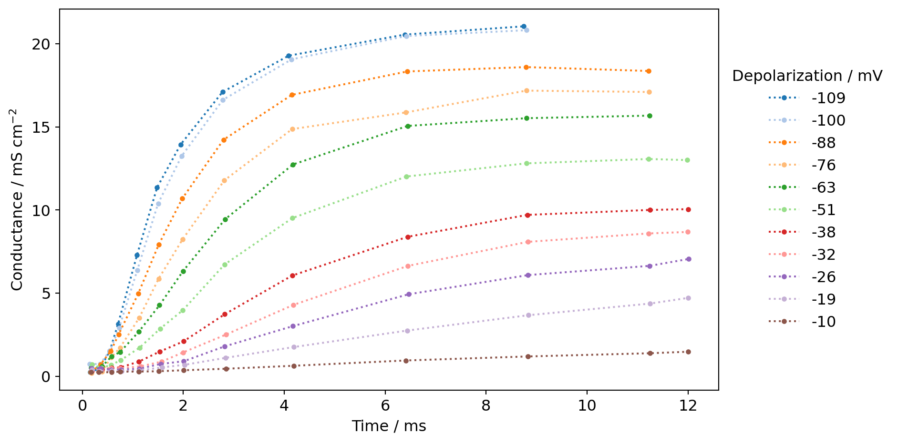
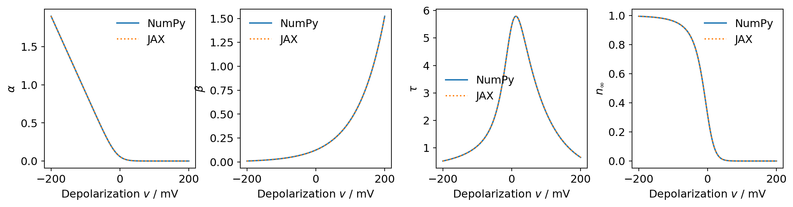
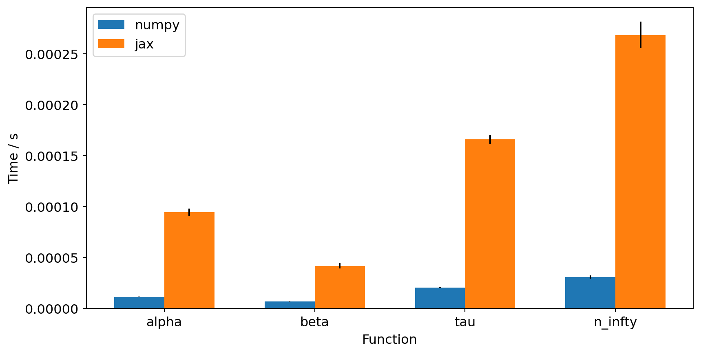
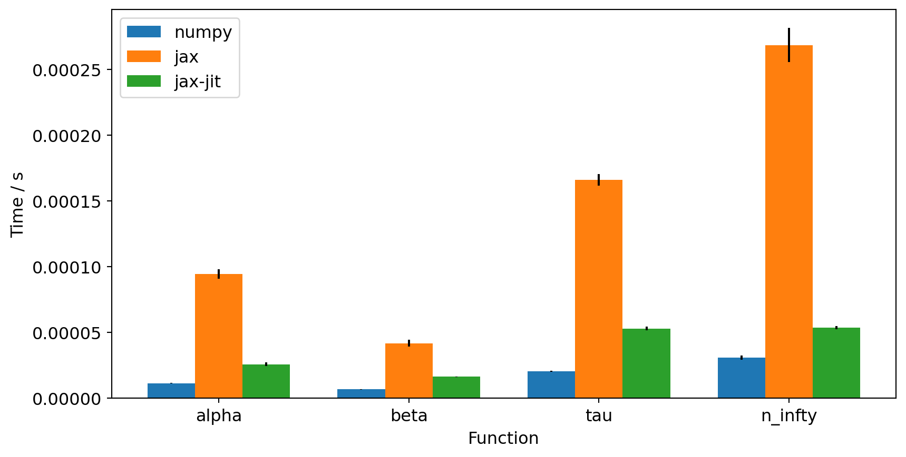
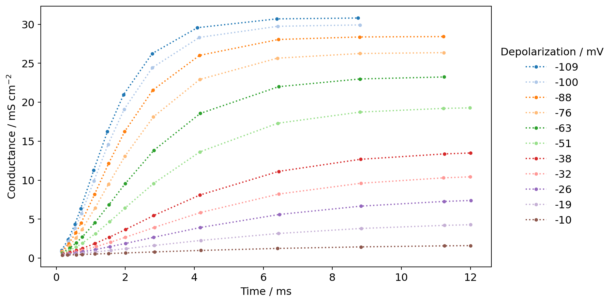
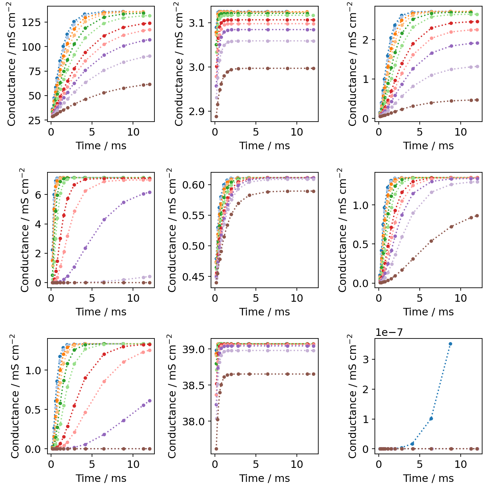
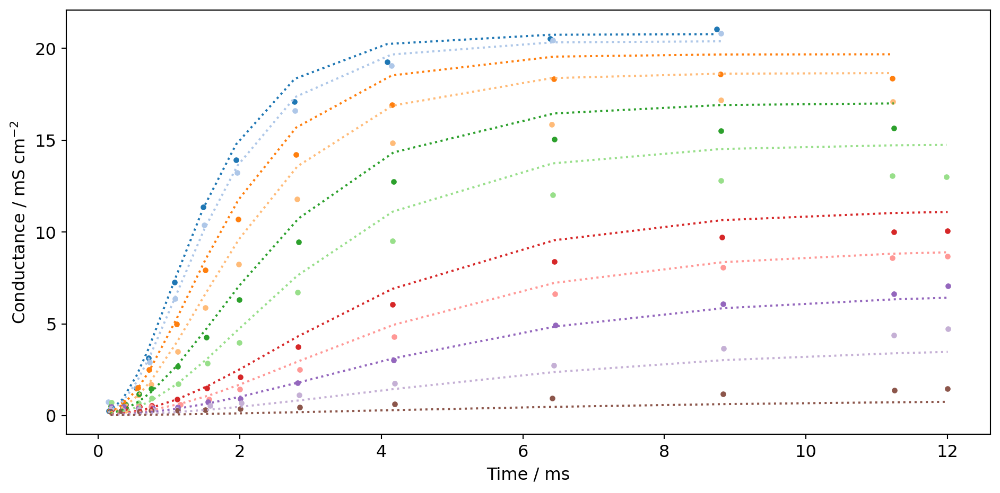
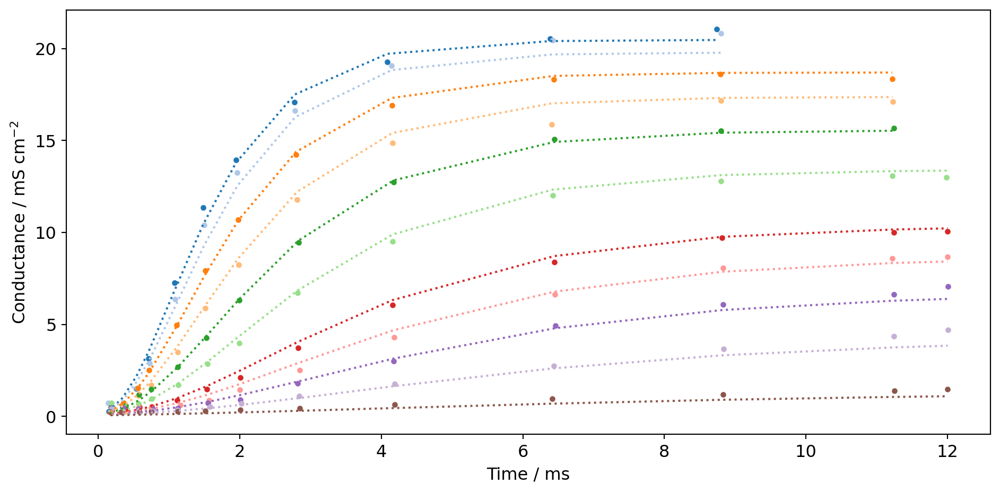
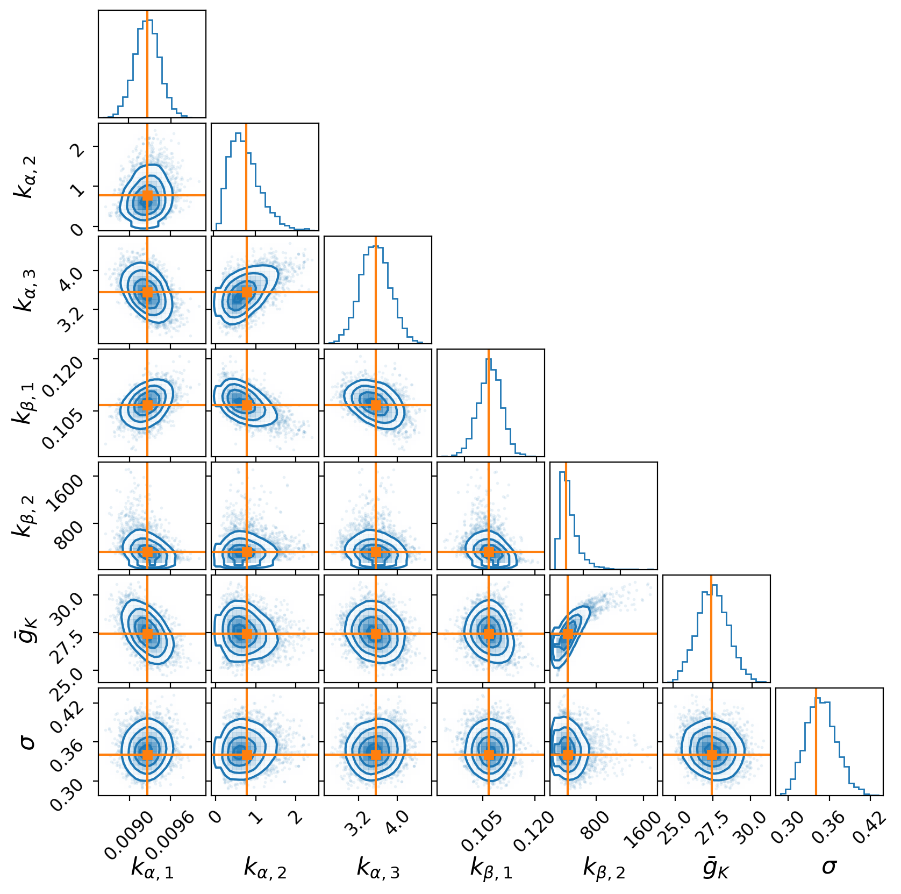

Scientific computing and
inference with JAX
Matt Graham
UCL Centre for Advanced Research Computing
🤔 What is JAX?

JAX is a Python library for accelerator-oriented array computation and program transformation, designed for high-performance numerical computing and large-scale machine learning.
✨ Key features
- 🙌 Ease of use: Offers a NumPy-like API make it accessible to those already familiar with scientific Python ecosystem.
- 🪄 Transformations: Provides composable function transformations for just-in-time compilation, batching, autodiff and parallelization.
- 🚀 Acceleration: Allows easily executing the same code on CPUs and accelerator devices such as GPUs and TPUs.
🏗️ JAX and XLA
JAX builds on XLA (accelerated linear algebra).

Image credit: OpenXLA documentation
🕰️ History
- JAX started as an research project in Google by a group including key contributors to Autograd and XLA.
- Early version of JAX was described in a SysML 2018 conference paper.
- Initial open-source release on GitHub was in October 2018.
- Since then has seen widespread adoption and developed a large open-source community.
🔢 Python array libraries


🔀 NumPy API substitutes
The wide user familiarity with NumPy’s API and large amount of existing code using NumPy has led some libraries to providing NumPy ‘like’ APIs
⚠️ NumPy API as common standard?
However NumPy API not designed for this purpose and has some shortcomings:
- Complex datatype promotion semantics.
- Copy-view behaviour.
- Not designed for use with non-CPU devices.
- Operations produce arrays with data-dependent shapes.
📐 Python data API standards

Array API standard defined by Consortium for Python Data API Standards (https://data-apis.org/).
DataFrame API standard also in development.
📏 Python array API standard
Python users have a wealth of choice for libraries and frameworks for numerical computing, data science, machine learning, and deep learning…
The APIs of each of these libraries are largely similar, but with enough differences that it’s quite difficult to write code that works with multiple (or all) of these libraries. This array API standard aims to address that issue, by specifying an API for the most common ways arrays are constructed and used.
💠Array API components

💡 Array API example
Consider following implementation of
\[\text{LogSumExp}(x_{1:N}) = x^* + \log \sum_{n=1}^N \exp(x_n - x^*), \\ x^* = \max x_{1:N}\]
def log_sum_exp(x):
xp = x.__array_namespace__()
max_x = xp.max(x)
return max_x + xp.log(xp.sum(xp.exp(x - max_x)))log_sum_exp can then be called with array objects from any library supporting array API.
🧩 Array API compatibility library
array_api_compat acts a small wrapper around common array libraries to provide compatibility with array API standard.
Useful for libraries with only partial support for array API.
NumPy v2.1+ and JAX v0.4.32+ fully support array API so using array_api_compat not strictly necessary.
▶️ Demo: simulation and inference with JAX
We will now demonstrate some of JAX and the Array API’s key features in an applied example.
All the code shown here can be run from the accompanying Jupyter notebook at https://github.com/matt-graham/jax-sci-comp-demo
Environment set up
jax_enable_x64
configuration
option
can
be
used
to
use
double-precision
types
by
default,
more
closely
matching
NumPy’s
behaviour.
Hodgkin-Huxley model

Image source: Wikipedia, by Krishnavedala, CC0 1.0
As an example of a scientific computing task, we will consider a model describing how action potentials in neurons are generated and how we might fit this to model to data.
The model of interest was described by Hodgkin and Huxley in 1952 based on experiments with squid giant axons, and they received a Nobel Prize for their work in 1963.
The cell membrane voltage \(V_m\) is modelled as being controlled by voltage-gated ion channels, with governing ordinary differential equation (ODE)
\[ C_m \frac{\mathrm{d}V_m}{\mathrm{d}t} = \sum_{n\in\lbrace\text{K, Na, L}\rbrace} g_n (E_n - V_m) - I. \]
Voltage clamp

In Hodgkin and Huxley’s experiments they used an ingenious experimental protocol to allow measuring the evolution of the cell membrane’s conductance over time for specific ion channels while clamped to a specific depolarization voltage.
By varying the extracellular ion concentrations, they were able to isolate the effects of the potassium and sodium channels. Here we will concentrate on the model and data specifically for \(g_{K}\), the potassium channel conductance.
Potassium channel conductance
The potassium channel conductance is modelled as
\[g_{\textrm{K}}(t, v, \theta) = \bar{g}_{\textrm{K}} n(t, v, \theta)^4\]
Potassium channel subunit activation
The subunit activation \(n\) is governed by a linear ODE
\[\frac{\mathrm{d} n(t, v, \theta)}{\mathrm{d} t} = \frac{n_\infty(v, \theta) - n(t, v, \theta)}{\tau(v, \theta)}\]
which has the analytic solution
\[ n(t, v, \theta) = n(0, v, \theta) + \left(n_\infty(v, \theta) - n(0, v, \theta)\right) \left(1 - \mathrm{e}^{-t / \tau(v, \theta)} \right). \]
Time constant and equilibrium value
The time constant \(\tau\) and equilibrium value \(n_\infty\) are defined in terms of rate constant functions \(\alpha\) and \(\beta\) as
\[ \tau(v, \theta) = \frac{1}{\alpha(v, \theta) + \beta(v, \theta)},\quad n_\infty(v, \theta) = \frac{\alpha(v, \theta)}{\alpha(v, \theta) + \beta(v, \theta)}. \]
Rate constants
The rate constants \(\alpha\) and \(\beta\) are themselves defined as
\[ \alpha(v, \theta) = \frac{k_{\alpha, 1}(v + k_{\alpha, 2})}{\exp((v + k_{\alpha, 2}) / k_{\alpha, 3}) - 1}, \quad \beta(v, \theta) = k_{\beta, 1} \exp(v / k_{\beta, 2}). \]
def alpha(v, parameters):
xp = array_api_compat.array_namespace(v)
return (
parameters["k_alpha_1"]
* (v + parameters["k_alpha_2"])
/ (xp.exp((v + parameters["k_alpha_2"]) / parameters["k_alpha_3"]) - 1)
)
def beta(v, parameters):
xp = array_api_compat.array_namespace(v)
return parameters["k_beta_1"] * xp.exp(v / parameters["k_beta_2"])Overall mathematical model
Together these equations define a mathematical model \(g_K(t, v, \theta)\) for how the potassium conductance \(g_K\) varies as a function of the
- applied depolarization \(v\),
- time \(t\),
- model parameters \(\theta = (k_{\alpha,1}, k_{\alpha,2}, k_{\alpha,3}, k_{\beta,1}, k_{\beta,2}, \bar{g}_K)\);
with corresponding Python implementation solve_for_potassium_conductances.
Experimental data
In Hodgkin and Huxley’s experiments, the potassium conductances were measured at regular time intervals for a series of applied depolarizations.
Below we load a digitization of the original potassium conductance time series experimental data for different polarizations analysed by Hodgkin and Huxley (1952).
Digitized data taken from Daly et al. 2015.
Visualizing the data
We also define a helper function to let us visualize this data as a group of time series.

Fixing the parameter values
We will start off by using fixed parameter values, taking those fitted by Hodgkin and Huxley to experimental data in their 1952 paper.
Creating arrays in NumPy and JAX
First we create a NumPy array of linearly spaced depolarizations to evaluate the model functions at.
Calling with NumPy and JAX arrays
As expected, calling model functions on the NumPy array produces a NumPy array as output:
Equivalence of implementations
The two output arrays are equal modulo floating point error differences:
We can also visualize the equivalence of the function outputs

Performance: NumPy vs. JAX
How do the functions using NumPy and JAX arrays compare in terms of compute time?
JAX’s asynchronous dispatch model
JAX dispatches operations asynchronously, only evaluating operations when the output is needed by a downstream operation or inspected by user.
Timing function calls with timeit
Now we time calling each of the functions with the timeit magic for both NumPy and JAX arrays and record the results
--------------------------------------------------------------------------------
numpy
--------------------------------------------------------------------------------
alpha: 11.5 μs ± 245 ns per loop (mean ± std. dev. of 7 runs, 100,000 loops each)
beta: 6.91 μs ± 174 ns per loop (mean ± std. dev. of 7 runs, 100,000 loops each)
tau: 20.6 μs ± 554 ns per loop (mean ± std. dev. of 7 runs, 10,000 loops each)
n_infty: 31 μs ± 1.66 μs per loop (mean ± std. dev. of 7 runs, 10,000 loops each)
--------------------------------------------------------------------------------
jax
--------------------------------------------------------------------------------
alpha: 94.6 μs ± 3.59 μs per loop (mean ± std. dev. of 7 runs, 10,000 loops each)
beta: 42 μs ± 2.51 μs per loop (mean ± std. dev. of 7 runs, 10,000 loops each)
tau: 166 μs ± 4.33 μs per loop (mean ± std. dev. of 7 runs, 10,000 loops each)
n_infty: 269 μs ± 12.9 μs per loop (mean ± std. dev. of 7 runs, 1,000 loops each)Visualising timing results
We can see that when evaluating on JAX arrays the functions are consistently and significantly slower! This can be seen even more clearly by plotting the timing results

JAX and NumPy dispatch models
This may at first seem surprising as JAX describes itself as a performance-oriented library. However,
- NumPy operations are executed eagerly and synchronously.
- JAX operations may be executed eagerly or lazily after compilation and they are dispatched asynchronously.
Text adapted from: https://jax.readthedocs.io/en/latest/faq.html#is-jax-faster-than-numpy
JAX and NumPy dispatch priorities
This has led to different priorities in the packages.
NumPy has put significant effort into decreasing the per-call dispatch overhead for individual array operations, because in NumPy’s computational model that overhead cannot be avoided.
JAX, on the other hand, has several ways to avoid dispatch overhead and so reducing per-call overhead has been less of a priority.
Text adapted from: https://jax.readthedocs.io/en/latest/faq.html#is-jax-faster-than-numpy
Reducing dispatch overhead
One particular way of reducing dispatch overhead offered by JAX is just-in-time (JIT) compilation.
As mentioned earlier JAX builds on top of the XLA compiler toolchain, which allows compiling code for a variety device backends (CPU, GPU, TPU).
Before we try out JIT compilation we will first take a look at how JAX’s function transformations work.
JAX tracing and jaxprs
At a high level, JAX’s function transformations, operate by first tracing the Python function to be transformed to an intermediate representation (IR), with this IR then interpreted with a transformation specific interpreter.
Jaxprs are JAX’s internal IR of traced programs.
Adapted from: https://jax.readthedocs.io/en/latest/jaxpr.html
Inspecting a jaxpr with make_jaxpr
Consider the beta function defined earlier:
def beta(v, parameters):
xp = array_api_compat.array_namespace(v)
return parameters["k_beta_1"] * xp.exp(v / parameters["k_beta_2"])
JAX provides a special jax.make_jaxpr transformation that allows us to inspect the jaxpr representation of a function.
Applying to beta and calling with the example arguments:
{ lambda ; a:f64[200] b:f64[] c:f64[] d:f64[] e:f64[] f:f64[] g:f64[]. let
h:f64[] = convert_element_type[new_dtype=float64 weak_type=False] g
i:f64[200] = div a h
j:f64[200] = exp i
k:f64[] = convert_element_type[new_dtype=float64 weak_type=False] f
l:f64[200] = mul k j
in (l,) }
Abstract values
Internally JAX traces functions with abstract values. For most transformations the abstraction is at the level of the shape and datatype of arguments, but not their values.
We can use the jax.ShapedDtypeStruct to create an abstract array with just shape and dtype attributes (plus some additional attributes for JAX bookkeeping such as device layout and sharding).
Tracing with abstract values
If we now call the jax.make_jaxpr transformed function with this abstract argument we get exactly the same result as before
{ lambda ; a:f64[200] b:f64[] c:f64[] d:f64[] e:f64[] f:f64[] g:f64[]. let
h:f64[] = convert_element_type[new_dtype=float64 weak_type=False] g
i:f64[200] = div a h
j:f64[200] = exp i
k:f64[] = convert_element_type[new_dtype=float64 weak_type=False] f
l:f64[200] = mul k j
in (l,) }
Control flow and tracing
Importantly any control flow in the in traced function is transparent to the tracing.
Consider the n_infty function which calls alpha and beta
def n_infty(v, parameters):
return alpha(v, parameters) / (alpha(v, parameters) + beta(v, parameters))
The jaxpr for this function corresponds to tracing through the full computation including nested calls.
{ lambda ; a:f64[200] b:f64[] c:f64[] d:f64[] e:f64[] f:f64[] g:f64[]. let
h:f64[] = convert_element_type[new_dtype=float64 weak_type=False] d
i:f64[200] = add a h
j:f64[] = convert_element_type[new_dtype=float64 weak_type=False] c
k:f64[200] = mul j i
l:f64[] = convert_element_type[new_dtype=float64 weak_type=False] d
m:f64[200] = add a l
n:f64[] = convert_element_type[new_dtype=float64 weak_type=False] e
o:f64[200] = div m n
p:f64[200] = exp o
q:f64[200] = sub p 1.0:f64[]
r:f64[200] = div k q
s:f64[] = convert_element_type[new_dtype=float64 weak_type=False] d
t:f64[200] = add a s
u:f64[] = convert_element_type[new_dtype=float64 weak_type=False] c
v:f64[200] = mul u t
w:f64[] = convert_element_type[new_dtype=float64 weak_type=False] d
x:f64[200] = add a w
y:f64[] = convert_element_type[new_dtype=float64 weak_type=False] e
z:f64[200] = div x y
ba:f64[200] = exp z
bb:f64[200] = sub ba 1.0:f64[]
bc:f64[200] = div v bb
bd:f64[] = convert_element_type[new_dtype=float64 weak_type=False] g
be:f64[200] = div a bd
bf:f64[200] = exp be
bg:f64[] = convert_element_type[new_dtype=float64 weak_type=False] f
bh:f64[200] = mul bg bf
bi:f64[200] = add bc bh
bj:f64[200] = div r bi
in (bj,) }
Just-in-time compilation with jax.jit
One of the key JAX transformations is the jax.jit function which allows functions to be JIT compiled with XLA for execution on a particular device (CPU, GPU or TPU).
{ lambda ; a:f64[200] b:f64[] c:f64[] d:f64[] e:f64[] f:f64[] g:f64[]. let
h:f64[200] = jit[
name=beta
jaxpr={ lambda ; a:f64[200] b:f64[] c:f64[] d:f64[] e:f64[] f:f64[] g:f64[]. let
i:f64[] = convert_element_type[new_dtype=float64 weak_type=False] g
j:f64[200] = div a i
k:f64[200] = exp j
l:f64[] = convert_element_type[new_dtype=float64 weak_type=False] f
h:f64[200] = mul l k
in (h,) }
] a b c d e f g
in (h,) }
Behaviour after jitting
The jitted and original functions give equivalent outputs to within floating point error
The jitted function however is significantly faster
print("Without jit")
%timeit beta(depolarizations_jax, parameters).block_until_ready()
print("With jit")
%timeit jitted_beta(depolarizations_jax, parameters).block_until_ready()Without jit
41.6 μs ± 1.48 μs per loop (mean ± std. dev. of 7 runs, 10,000 loops each)
With jit
14.6 μs ± 220 ns per loop (mean ± std. dev. of 7 runs, 100,000 loops each)jax.jit: under the hood
When calling a jitted function JAX does the following in order:
- Stage out a specialized version of the original Python callable to an internal representation (jaxpr).
- Lower this specialized, staged-out computation to the XLA compiler’s input language, StableHLO.
- Compile the lowered HLO program to produce an optimized executable for the target device (CPU, GPU, or TPU).
- Execute the compiled executable with the arrays as arguments.
Text adapted from: https://jax.readthedocs.io/en/latest/aot.html
Ahead-of-time compilation in JAX
JAX has an ahead-of-time (AOT) compilation interface which allows us to separate out the steps (1, 2), 3, and 4.
Lowering
Lowering a function on (potentially abstract) arguments allows us to view the StableHLO representation.
lowered_beta = jax.jit(beta).lower(abstract_depolarizations, parameters)
print(lowered_beta.as_text())module @jit_beta attributes {mhlo.num_partitions = 1 : i32, mhlo.num_replicas = 1 : i32} {
func.func public @main(%arg0: tensor<200xf64>, %arg1: tensor<f64>, %arg2: tensor<f64>) -> (tensor<200xf64> {jax.result_info = "result"}) {
%0 = stablehlo.convert %arg2 : tensor<f64>
%1 = stablehlo.broadcast_in_dim %0, dims = [] : (tensor<f64>) -> tensor<200xf64>
%2 = stablehlo.divide %arg0, %1 : tensor<200xf64>
%3 = stablehlo.exponential %2 : tensor<200xf64>
%4 = stablehlo.convert %arg1 : tensor<f64>
%5 = stablehlo.broadcast_in_dim %4, dims = [] : (tensor<f64>) -> tensor<200xf64>
%6 = stablehlo.multiply %5, %3 : tensor<200xf64>
return %6 : tensor<200xf64>
}
}
Compiling
We can then compile a lowered function.
This for example allows us to avoid the overhead of compiling on the first execution in timing benchmarks.
It also allows us to analyse the cost of the compiled function.
Importantly however this compiled function is specific to the argument shapes and datatypes and cannot be further transformed.
{'bytes accessed': 3216.0,
'utilization1{}': 1.0,
'bytes accessed2{}': 8.0,
'bytes accessed1{}': 8.0,
'bytes accessedout{}': 1600.0,
'transcendentals': 200.0,
'utilization0{}': 1.0,
'bytes accessed0{}': 1600.0,
'flops': 400.0,
'utilization2{}': 1.0}Repeating performance comparison
We now time jitted versions of each of the functions.
alpha: 25.9 μs ± 1.41 μs per loop (mean ± std. dev. of 7 runs, 10,000 loops each)
beta: 16.4 μs ± 315 ns per loop (mean ± std. dev. of 7 runs, 100,000 loops each)
tau: 53 μs ± 1.33 μs per loop (mean ± std. dev. of 7 runs, 10,000 loops each)
n_infty: 53.9 μs ± 1.26 μs per loop (mean ± std. dev. of 7 runs, 10,000 loops each)
jit’s effect on performance
We see that jitting
- gives a consistent significant performance improvement,
- and that improvement is generally larger for the functions with more traced operations (
tauandn_infty).
However performance is still worse than NumPy in these cases.
Going larger
solve_for_potassium_conductance
we
defined
earlier
allows
us
to
generate
simulated
conductance
data
using
the
model
parameters
from
the
paper.

We see that the simulated and observed conductances are similar as we would hope!
Tracing overall model
The solve_for_potassium_conductance function evaluates the model for vectors of both times and depolarizations, and has a much larger traced computation
jax.make_jaxpr(solve_for_potassium_conductance)(
data["times"], data["depolarizations"], parameters
){ lambda ; a:f64[136] b:f64[136] c:f64[] d:f64[] e:f64[] f:f64[] g:f64[] h:f64[]. let
i:f64[] = add 0.0:f64[] e
j:f64[] = mul d i
k:f64[] = add 0.0:f64[] e
l:f64[] = div k f
m:f64[] = exp l
n:f64[] = sub m 1.0:f64[]
o:f64[] = div j n
p:f64[] = add 0.0:f64[] e
q:f64[] = mul d p
r:f64[] = add 0.0:f64[] e
s:f64[] = div r f
t:f64[] = exp s
u:f64[] = sub t 1.0:f64[]
v:f64[] = div q u
w:f64[] = div 0.0:f64[] h
x:f64[] = exp w
y:f64[] = mul g x
z:f64[] = add v y
ba:f64[] = div o z
bb:f64[] = convert_element_type[new_dtype=float64 weak_type=False] e
bc:f64[136] = add b bb
bd:f64[] = convert_element_type[new_dtype=float64 weak_type=False] d
be:f64[136] = mul bd bc
bf:f64[] = convert_element_type[new_dtype=float64 weak_type=False] e
bg:f64[136] = add b bf
bh:f64[] = convert_element_type[new_dtype=float64 weak_type=False] f
bi:f64[136] = div bg bh
bj:f64[136] = exp bi
bk:f64[136] = sub bj 1.0:f64[]
bl:f64[136] = div be bk
bm:f64[] = convert_element_type[new_dtype=float64 weak_type=False] e
bn:f64[136] = add b bm
bo:f64[] = convert_element_type[new_dtype=float64 weak_type=False] d
bp:f64[136] = mul bo bn
bq:f64[] = convert_element_type[new_dtype=float64 weak_type=False] e
br:f64[136] = add b bq
bs:f64[] = convert_element_type[new_dtype=float64 weak_type=False] f
bt:f64[136] = div br bs
bu:f64[136] = exp bt
bv:f64[136] = sub bu 1.0:f64[]
bw:f64[136] = div bp bv
bx:f64[] = convert_element_type[new_dtype=float64 weak_type=False] h
by:f64[136] = div b bx
bz:f64[136] = exp by
ca:f64[] = convert_element_type[new_dtype=float64 weak_type=False] g
cb:f64[136] = mul ca bz
cc:f64[136] = add bw cb
cd:f64[136] = div bl cc
ce:f64[] = convert_element_type[new_dtype=float64 weak_type=False] ba
cf:f64[136] = sub cd ce
cg:f64[136] = neg a
ch:f64[] = convert_element_type[new_dtype=float64 weak_type=False] e
ci:f64[136] = add b ch
cj:f64[] = convert_element_type[new_dtype=float64 weak_type=False] d
ck:f64[136] = mul cj ci
cl:f64[] = convert_element_type[new_dtype=float64 weak_type=False] e
cm:f64[136] = add b cl
cn:f64[] = convert_element_type[new_dtype=float64 weak_type=False] f
co:f64[136] = div cm cn
cp:f64[136] = exp co
cq:f64[136] = sub cp 1.0:f64[]
cr:f64[136] = div ck cq
cs:f64[] = convert_element_type[new_dtype=float64 weak_type=False] h
ct:f64[136] = div b cs
cu:f64[136] = exp ct
cv:f64[] = convert_element_type[new_dtype=float64 weak_type=False] g
cw:f64[136] = mul cv cu
cx:f64[136] = add cr cw
cy:f64[136] = div 1.0:f64[] cx
cz:f64[136] = div cg cy
da:f64[136] = exp cz
db:f64[136] = sub 1.0:f64[] da
dc:f64[136] = mul cf db
dd:f64[] = convert_element_type[new_dtype=float64 weak_type=False] ba
de:f64[136] = add dd dc
df:f64[136] = integer_pow[y=4] de
dg:f64[] = convert_element_type[new_dtype=float64 weak_type=False] c
dh:f64[136] = mul dg df
in (dh,) }
Applying jit to overall model
We can JIT compile this function
Comparing performance we now see (JIT compiled) JAX is now at least matching NumPy’s performance:
NumPy
87.9 μs ± 3.88 μs per loop (mean ± std. dev. of 7 runs, 10,000 loops each)
Compiled JAX
74.8 μs ± 1.47 μs per loop (mean ± std. dev. of 7 runs, 10,000 loops each)Fitting model parameters
While we have been using the model parameters provided in the paper, typically we would first need to fit the model parameters.
In Hodgkin and Huxley’s case the parameters were fitted by matching hand-drawn curves to the data (Daly et al. 2015)!
In reality as data is generally noisy and models may be non-identifiable, there will be a distribution of parameters consistent with the observed data and our prior assumptions about the model.
Approximate Bayesian computation
One of the conceptually simplest approaches for finding this (posterior) distribution on the parameters, is to
- simulate a large number of parameters that give model outputs consistent with our prior knowledge,
- compute simulated observed outputs for each parameter, compare to the observed data and keep on the parameter values for which simulations and observations are close.
This approach is sometimes called approximate Bayesian computation (ABC).
Prior model
For our purposes we will use a simple prior model in which the parameters are constrained to be positive and with appropriate scales, and to be a-priori independent with log-normal marginals.
Prior model implementation
Importantly defining the function to generate parameters in terms of a vector in an unconstrained space will later simplify optimizing the parameters without having to consider constraints.
Generative model
Given the function for generating parameters, we can now write a function to generate simulated conductance time series data given a vector of (unconstrained and normalized) parameter values.
Simulating from model
We can then randomly generate parameters and plot the corresponding simulated outputs

Vectorized simulation: jax.vmap
jax.vmap
which
allows
us
to
evaluate
a
function
for
a
batch
of
inputs
simultaneously.
vmap
avoids
having
to
manually
adjust
code
and
correctly
remember
broadcasting
rules.
jax.vmap
transformation
takes
optional
arguments
specifying
the
argument
axes
over
which
to
vectorize.
u
to
generate_conductances
-
notice
also
that
we
can
compose
jax.vmap
with
jax.jit
.
Performance gaining from batching
Importantly, as this is implemented by transforming the traced computation to use vectorized / batched variants of operations, it gives a significant performance improvement over mapping sequentially over a batch:
96.2 ms ± 1.39 ms per loop (mean ± std. dev. of 7 runs, 10 loops each)Simple ABC
u_prior_samples = rng.standard_normal((100000, dim_parameters))
generated_conductances = vmapped_generate_conductances(u_prior_samples, data)
index_of_closest = (
((generated_conductances - data["conductances"]) ** 2).sum(-1).argmin()
)
display(generate_parameters(u_prior_samples[index_of_closest])){'k_alpha_1': np.float64(0.01087083261109017),
'k_alpha_2': np.float64(1.9857834602880655),
'k_alpha_3': np.float64(3.896441088114956),
'k_beta_1': np.float64(0.14876831470095073),
'k_beta_2': np.float64(52.94196826971615),
'g_bar_k': np.float64(22.170279829607466),
'sigma': np.float64(1.0295007589912917)}Comparing simulations to data
We can then plot the closest found simulated conductance time series (dotted lines) against the observed conductance time series data (circular markers)

Gradient-based inference: jax.grad
def normal_negative_log_density(x, mu=0, sigma=1):
xp = array_api_compat.array_namespace(x)
return (((x - mu) / sigma) ** 2).sum() / 2 + x.shape[-1] * xp.log(sigma)
@jax.jit
def negative_log_posterior_density(u, data):
parameters = generate_parameters(u)
conductances = solve_for_potassium_conductance(
data["times"], data["depolarizations"], parameters
)
return normal_negative_log_density(u) + normal_negative_log_density(
conductances, data["conductances"], parameters["sigma"]
)Automatic differentiation with JAX
We can then use the jax.value_and_grad transformation to compute a function which evaluates both the value of the function and its gradient, using reverse mode automatic differentiation
This can be composed with the jax.jit transformation to compile the gradient function.
Evaluating value and gradient
We can evaluate the transformed function at a test input to check that it correctly gives the same value as the original (primal) function
Validating gradient
We can also check that the gradient returned is consistent with a finite differences approximation
def numerical_grad(f, h=1e-8):
def grad_f(u, *args):
xp = array_api_compat.array_namespace(u)
return xp.array(
[
(f(u + h * e_i, *args) - f(u - h * e_i, *args)) / (2 * h)
for e_i in xp.identity(u.shape[0])
]
)
return grad_f
assert np.allclose(
numerical_grad(negative_log_posterior_density)(u, data), gradient
)Cost of automatic differentiation
Importantly reverse mode differentiation allows us to evaluate both the value and gradient of a scalar function with respect to all inputs at operation cost that is a small constant multiple of the operation cost of evaluating the function itself:
30.1 μs ± 2.61 μs per loop (mean ± std. dev. of 7 runs, 10,000 loops each)Optimization with JAX
jax.grad
transformation
to
construct
a
function
computing
the
gradient
of
the
objective.
jax.lax.fori_loop
from
the
jax.lax
interface
is
used
for
the
optimization
loop.
objective
argument
as
static
to
allow
JAX
to
trace
its
computation
when
JIT
compiling.
from jax.example_libraries import optimizers
from functools import partial
@partial(jax.jit, static_argnums=0)
def minimize_with_adam(objective, initial_parameters, n_step, step_size=1e-2):
initialize, update, get_parameters = optimizers.adam(step_size)
grad_objective = jax.grad(objective)
def optimization_step(step, state):
grads = grad_objective(get_parameters(state))
return update(step, grads, state)
initial_state = initialize(initial_parameters)
final_state = jax.lax.fori_loop(0, n_step, optimization_step, initial_state)
return get_parameters(final_state)Computing MAP estimate
Using the minimize_with_adam helper function, we can compute a MAP estimate of the (unconstrained) parameter vector and the corresponding simulated conductance time series.
Visualising MAP estimate simulations

Markov chain Monte Carlo
While minimizing the negative log posterior density gives us a point estimate of the parameters, it does not give us any distributional information - that is what is our uncertainty about the parameter values after observing data.
An alternative is to use a Markov chain Monte Carlo (MCMC) method to compute approximate samples from the posterior distribution on the model parameters given data.
As a final illustration, we use the package Mici to generate approximate samples from the posterior distribution for our Hodgkin-Huxley example, using a gradient-based MCMC method, Hamiltonian Monte Carlo (HMC).
Hamiltonian Monte Carlo with Mici
mici.sample_hmc_chains function
.
import mici
n_chain = 4
final_states, traces, stats = mici.sample_hmc_chains(
neg_log_dens=partial(negative_log_posterior_density, data=data),
backend="jax", n_warm_up_iter=1000, n_main_iter=1000, seed=rng,
init_states=rng.standard_normal((n_chain, dim_parameters)),
trace_funcs=[lambda state: generate_parameters(state.pos)],
adapters=[
mici.adapters.DualAveragingStepSizeAdapter(),
mici.adapters.OnlineCovarianceMetricAdapter(),
],
n_worker=n_chain if free_threading_enabled else 1,
use_thread_pool=free_threading_enabled,
monitor_stats=["accept_stat", "step_size", "n_step"],
)Hamiltonian Monte Carlo with Mici
Computing summaries using ArviZ
We can compute summary statistics and convergence diagnostics on the parameter values traced while sampling the chains using the ArviZ package
| mean | sd | hdi_3% | hdi_97% | mcse_mean | mcse_sd | ess_bulk | ess_tail | r_hat | |
|---|---|---|---|---|---|---|---|---|---|
| k_alpha_1 | 0.009 | 0.000 | 0.009 | 0.010 | 0.000 | 0.000 | 2270.0 | 2468.0 | 1.00 |
| k_alpha_2 | 0.757 | 0.372 | 0.154 | 1.446 | 0.010 | 0.008 | 1334.0 | 1181.0 | 1.00 |
| k_alpha_3 | 3.543 | 0.291 | 2.981 | 4.082 | 0.006 | 0.005 | 2584.0 | 2344.0 | 1.00 |
| k_beta_1 | 0.107 | 0.003 | 0.101 | 0.113 | 0.000 | 0.000 | 1920.0 | 2110.0 | 1.00 |
| k_beta_2 | 376.052 | 175.845 | 160.660 | 683.282 | 7.417 | 14.586 | 779.0 | 634.0 | 1.01 |
| g_bar_k | 27.512 | 0.977 | 25.534 | 29.226 | 0.034 | 0.022 | 820.0 | 939.0 | 1.01 |
| sigma | 0.349 | 0.022 | 0.308 | 0.389 | 0.000 | 0.000 | 4016.0 | 2807.0 | 1.00 |
Visualizing posterior using corner
We can also visualise the estimated posterior distribution on the parameters as a pair plot using corner.py, overlaying the MAP parameters as an orange marker
